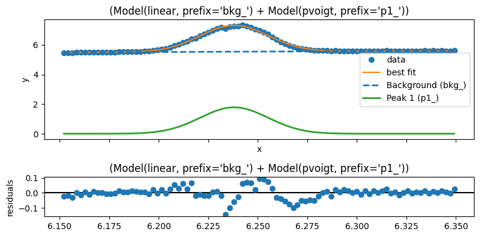

Quick peak fitting
This cell below is if you have already loaded in some 1d data, and can then select specific peaks to carry out a peak fitting routine on. First create a set of peaks you want to use in the fit following the format
peak1 = {'type':name-of-peak,
'settings':
{'center':[6.25,6.2,6.3],
'sigma': [0.02,1e-6,0.1],
'amplitude': [7,1e-6,18],
'fraction':[0.15,0,1]}
}
The currently supported peak type names are listed below, and use built-in models within the lmfit python package - click on the links below to find out more about the available settings for each peak type
"pvoigt": fits using PseudoVoigtModel,"gaussian": fits using GaussianModel,"lorentzian": fits using LorentzianModel,"split_lorentzian": fits using SplitLorentzianModel,"skewed_gaussian": fits using SkewedGaussianModel,
[1]:
from giwaxs_toolbox.processing import data_loader
from giwaxs_toolbox.plotting import reset_plots
import matplotlib.pyplot as plt
from pprint import pprint
import numpy as np
import os
folder1="/dls/science/groups/das/ExampleData/i07/fast_rsm_example_data/tests_versioned/v2.4.1_i07_2026-04-14"
filelist= [file for file in os.listdir(folder1) if file.endswith('.hdf5')]
#create your data loader for your data directory path
loader=data_loader(datafolder=folder1)
#choose which datasets you want to load
example_ivqfiles=['IvsQ_432196_2026-04-14_14h19m06s.hdf5',
'IvsQ_610009_2026-04-14_14h22m41s.hdf5']
# load the files into a results object
ivqresults=loader.loadfiles(example_ivqfiles)
[ ]:
from giwaxs_toolbox.processing import peakfit_and_plot
peak1 = {'type':'pvoigt',
'settings':
{'center':[6.25,6.2,6.3],
'sigma': [0.02,1e-6,0.05],
'amplitude': [7,1e-6,18000],
'fraction':[0.15,0,1]}
}
peak2 = {'type':'pvoigt',
'settings':
{'center':[5.38,5.35,5.39],
'sigma': [0.02,1e-6,0.05],
'amplitude': [7,1e-6,1800],
'fraction':[0.15,0,1]}
}
peaklist=[peak1]
#peaklist=[peak1,peak2]
res=ivqresults[0]
q=res.x_axis
intensity=res.data
con1=q>6.15
con2=q<6.35
selection=con1&con2
x=q[selection]
y=intensity[selection]
report=peakfit_and_plot(peaklist,x,y)

This will use your selected profile, along with the limits gived by constraints con1 and con2, to fit the peaks detailed in peaklist - with the fitting result saved to the report object, and a summary plot being output
You can access the details of the fit by calling the report object
[22]:
report
[22]:
Fit Result
Model: (Model(linear, prefix='bkg_') + Model(pvoigt, prefix='p1_'))
| fitting method | leastsq |
| # function evals | 130 |
| # data points | 93 |
| # variables | 6 |
| chi-square | 0.13232665 |
| reduced chi-square | 0.00152100 |
| Akaike info crit. | -597.622556 |
| Bayesian info crit. | -582.426959 |
| R-squared | 0.99573762 |
| name | value | standard error | relative error | initial value | min | max | vary | expression |
|---|---|---|---|---|---|---|---|---|
| bkg_slope | 0.54498482 | 0.07742226 | (14.21%) | 10.0 | -inf | inf | True | |
| bkg_intercept | 2.14131480 | 0.48801746 | (22.79%) | 5.466299057006836 | -inf | inf | True | |
| p1_amplitude | 0.07662386 | 0.00325009 | (4.24%) | 7.0 | 1.0000e-06 | 18000.0000 | True | |
| p1_center | 6.23801411 | 1.4548e-04 | (0.00%) | 6.25 | 6.20000000 | 6.30000000 | True | |
| p1_sigma | 0.02019399 | 1.9587e-04 | (0.97%) | 0.02 | 1.0000e-06 | 0.05000000 | True | |
| p1_fraction | 5.1531e-13 | 0.00432395 | (839096239403.65%) | 0.15 | 0.00000000 | 1.00000000 | True | |
| p1_fwhm | 0.04038798 | 3.9174e-04 | (0.97%) | 0.04 | -inf | inf | False | 2.0000000*p1_sigma |
| p1_height | 1.78229547 | 124.957295 | (7011.03%) | 156.45256423122214 | -inf | inf | False | (((1-p1_fraction)*p1_amplitude)/max(1e-15, (p1_sigma*sqrt(pi/log(2))))+(p1_fraction*p1_amplitude)/max(1e-15, (pi*p1_sigma))) |
| Parameter1 | Parameter 2 | Correlation |
|---|---|---|
| bkg_slope | bkg_intercept | -0.9997 |
| p1_amplitude | p1_fraction | +0.9726 |
| bkg_intercept | p1_amplitude | -0.3562 |
| bkg_slope | p1_amplitude | +0.3359 |
| bkg_intercept | p1_fraction | -0.3174 |
| bkg_slope | p1_fraction | +0.2980 |
| bkg_slope | p1_center | -0.2484 |
| bkg_intercept | p1_center | +0.2484 |
| p1_sigma | p1_fraction | -0.2465 |
alternatively you can access individual results like this:
[ ]:
report.params['p1_fwhm'].value
0.04038797932363416
[24]:
report.params['p1_center'].value
[24]:
6.23801411075692
[ ]:
# You can run similar parameters for multiple datasets
for i in np.arange(5):
res=ivqresults[i]
q=res.x_axis
intensity=res.data
con1=q>6.15
con2=q<6.35
selection=con1&con2
x=q[selection]
y=intensity[selection]
report=peakfit_and_plot(peaklist,x,y)
result_list.append(report)